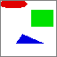

Generate Dataset
Synthetic datasets can help you quickly validate your ideas during building ML models. This data may also allow you to write unit tests for your ML model without exposing original images. Check our use-cases sections to learn more about how you can use synthetic data in your project.
Usage
The process of generating a synthetic dataset can be initiated by the Python create_dataset() function (see PyDoc for more information) or via a command line.
~$ python squids.main generate [-h] [-s NUMBER] [--coco] [--image-width PIXELS]
[--image-height PIXELS] [--image-palette {gray,color,binary,rgb}]
[--image-background {black,white}] [--image-capacity NUMBER]
[--random-state NUMBER] [-v]
[DATASET_DIR]
positional arguments:
DATASET_DIR a generating dataset directory, (default 'dataset/synthetic')
optional arguments:
-h, --help show this help message and exit
-s NUMBER, --dataset-size NUMBER
a number of generated data samples (default=1000)
--coco a flag to generate dataset in the COCO format
--image-width PIXELS a generated image width (default=64)
--image-height PIXELS
a generated image height (default=64)
--image-palette {gray,color,binary,rgb}
a used image palette (default='color')
--image-background {black,white}
a used image background (default='white')
--image-capacity NUMBER
a number of shapes per image (default=3)
--random-state NUMBER
a random state to use (default=None)
-v, --verbose a flag to set verbose mode
Image Size
All generated synthetic images have the same size. The image size is defined by two parameters: image_width and image_height (command-line options --image-width and --image-height).
Note
The inage size can be changed when transforming to TFRecords (all annotations are going to be rescaled accordingly).
Image Capacity
Each synthetic image is a collection of different geometrical shapes: ellipses, rectangles, and triangles. The maximum number of geometrical shapes is defined by the parameter image_capacity (command-line options --image-capacity). For example, if the image capacity is set to 3, means that synthetic images can have 1, 2, or 3 different geometrical shapes (ellipses, rectangles, and triangles).
Image Style
Images can be generated with different color profiles which are defined by two parameters image_palette and image_background (command-line options --image-palette and --image-background). The following table explains possible profiles.
| image_palette | image_background | Generated shapes | Example |
|---|---|---|---|
| COLOR | WHITE | Any color shape on white background | |
| RGB | WHITE | Red/green/blue color shape on white background |  |
| GRAY | WHITE | Any gray-scale shape on white background | |
| BINARY | WHITE | Any black shape on white background | |
| COLOR | BLACK | Any color shape on black background | |
| RGB | BLACK | Red/green/blue color shape on black background | |
| GRAY | BLACK | Any gray-scale shape on black background | |
| BINARY | BLACK | Any white shape on black background |
Dataset Reproducibility
It is important to reproduce exactly the same synthetic dataset for some machine learning experiments. To do that set the random_state (command-line option --random-state) to a particular integer value. But default the random state has been set to None. It means creating a new dataset every time the function or command line is called.
Outcome
Synthetic data can be generated in CSV and COCO formats. Both formats will lead to the same outcome during the transformation of these data to TFRecords. You can choose which one suits you more.
CSV, probably, is the most intuitive format for handling structural data. It is also used in a lot of computer vision projects for manipulating synthetic and real data.
The Python function or the correspondent command-line will generate the following files structure (under dataset/synthetic) in the current folder.
Note
The current folder is the folder from which you launched your Python application.
| Artifact | Type | Comment |
|---|---|---|
| images | Dir | Contains all generated images |
| instances_train.csv | File | Contains training records including image and annotations |
| instances_val.csv | File | Contains validation records including image and annotations |
| instances_test.csv | File | Contains test records including image and annotations |
| categories.json | File | Contains information about annotated categories |
All CSV files have the same structure, shown below.
| Column Name | Column Description |
|---|---|
| image_id | Defines an image ID which later will identifier this image in TFRecords |
| file_name | Defines an image file name (note the file will be automatically looked up in the images directory) |
| bboxes | Defines a list of bounding boxes, for all objects annotated in the corresponding image |
| segmentations | Defines a list of segmentations in the form of polygons, for all objects annotated in the corresponding image |
| category_ids | Defines a list of category IDs, for all objects annotated in the corresponding image |
This is a fragment of such a CSV file.
| image_id | file_name | bboxes | segmentations | category_ids |
|---|---|---|---|---|
| 0 | image0.jpg | [[73, 155, 122, 44], [141, 45, 98, 74], [3, 3,... | [[98, 155, 195, 199, 73, 199], [141, 45, 239, ... | [2, 3, 1] |
| 3 | image3.jpg | [[44, 154, 82, 61], [114, 83, 32, 59]] | [[126, 184, 125, 188, 124, 192, 123, 195, 120,... | [1, 2] |
| 4 | image4.jpg | [[31, 62, 55, 75], [146, 105, 36, 121]] | [[86, 99, 85, 104, 85, 108, 84, 113, 82, 117, ... | [1, 2] |
| 5 | image5.jpg | [[69, 39, 86, 53], [166, 118, 47, 117]] | [[155, 65, 154, 68, 153, 72, 151, 75, 149, 78,... | [1, 3] |
| 7 | image7.jpg | [[59, 69, 78, 65]] | [[59, 69, 137, 69, 137, 134, 59, 134]] | [3] |
| ... | ... | ... | ... | ... |
| 993 | image993.jpg | [[120, 40, 76, 107], [59, 30, 125, 85], [69, 1... | [[120, 40, 196, 40, 196, 147, 120, 147], [166,... | [3, 2, 3] |
| 994 | image994.jpg | [[122, 7, 43, 123]] | [[122, 7, 165, 7, 165, 130, 122, 130]] | [3] |
| 995 | image995.jpg | [[1, 159, 89, 25], [60, 51, 72, 38], [125, 33,... | [[90, 171, 89, 173, 88, 174, 86, 176, 84, 177,... | [1, 3, 3] |
| 997 | image997.jpg | [[211, 152, 27, 79]] | [[211, 152, 238, 152, 238, 231, 211, 231]] | [3] |
| 999 | image999.jpg | [[18, 84, 56, 93], [203, 72, 49, 70], [14, 132... | [[18, 84, 74, 84, 74, 177, 18, 177], [252, 107... | [3, 1, 1] |
Information about each category ID in the category_ids column is defined in the categories.json file.
{
"categories": [
{
"id": 1,
"name": "ellipse",
"supercategory": "shape"
},
{
"id": 2,
"name": "triangle",
"supercategory": "shape"
},
{
"id": 3,
"name": "rectangle",
"supercategory": "shape"
}
]
}
For example, a CSV file record has the following category IDs [3, 2]. It means that the first annotated object is the rectangle (since its ID is 3), and the second is the triangle (since its ID is 2 respectively).
COCO, probably, is the most popular format for handling synthetic and real computer vision data.
Note
The following description of the COCO format focuses only on the key points necessary to understand how this data is transformed to the TFRecords. If you would like to learn more about the COCO format we recommend reading the following documentation.
The Python function or the correspondent command-line will generate the following files structure (under dataset/synthetic) in the current folder.
dataset/synthetic/
annotations/
instances_test.json
instances_train.json
instances_val.json
instances_test/
instances_train/
instances_val/
Note
The current folder is the folder from which you launched your Python application.
Important
To generate data in COCO format you need to set function argument coco=True or use the flag --coco in the command line.
| Artifact | Type | Comment |
|---|---|---|
| annotations | Dir | Contains files describing annotations |
| annotations/instances_train.json | File | Contains training records including image and annotations |
| annotations/instances_val.json | File | Contains validation records including image and annotations |
| annotations/instances_test.json | File | Contains test records including image and annotations |
| instances_train | Dir | Contains all generated training images (annotated in instances_train.json) |
| instances_val | Dir | Contains all generated validation images (annotated in instances_val.json) |
| instances_test | Dir | Contains all generated test images (annotated in instances_test.json) |
All JSON files have the same structure, shown below.
The top-level of the COCO JSON structure contains the five properties: info, licenses, images, categories, annotations. The following three: images, annotations, and categories are important for the current topic and are reviewed below.
images property contains a list of items with information about each annotated image. Its example is shown below.
"images": [
...,
{
"file_name": "image1.jpg",
"coco_url": "file:///dataset/synthetic/instances_train/image1.jpg",
"width": 64,
"height": 64,
"date_captured": "2022-01-13 15:00:33",
"id": 1
},
...
]
The most important properties are file_name and id. The transformer will read this image file from the folder derived from the stem name of the JSON file and file_name. For example, if the JSON file is instances_train.json and file_name is "image1.jpg", the image is expected to be in the ../instances_train/image1.jpg. The property id is used by the transformer to define a record associated with this image.
annotations property contains a list of items with information about a specific annotation within an image such as bounding box, segmentation, and encapsulated object category. Its example is shown below.
"annotations": [
...,
{
"segmentation": [
[
51,
52,
53,
58,
41,
58
]
],
"area": 36.0,
"iscrowd": 0,
"image_id": 1,
"bbox": [
41,
52,
12,
6
],
"category_id": 2,
"id": 2
},
...
]
Each record contains information about an image it belongs to via the property image_id, bounding box coordinates bbox, segmentation polygon coordinates segmentation, and category_id to define what type of an object is segmented.
categories property contains a list of items with information about available object categories. Its example is shown below.
"categories": [
{
"id": 1,
"name": "ellipse",
"supercategory": "shape"
},
{
"id": 2,
"name": "triangle",
"supercategory": "shape"
},
{
"id": 3,
"name": "rectangle",
"supercategory": "shape"
}
]
The category id is related to the category_id property defined in annotation and tide together annotation and category information.
PyDoc
Maker
A module for creating synthetic datasets.
create_dataset(dataset_dir='dataset/synthetic', dataset_size=1000, image_width=64, image_height=64, image_palette=<Palette.COLOR: 'color'>, image_background=<Background.WHITE: 'white'>, image_capacity=3, coco=False, random_state=None, verbose=False)
This function generates dataset in CSV or COCO format.
The input parameters for generating the dataset in CSV or COCO format
are the same except for the coco flag. If the coco flag is False
the dataset generating in CSV format, and if it is True the dataset
generating in COCO format respectively.
Parameters:
| Name | Type | Description | Default |
|---|---|---|---|
dataset_dir |
str |
The directory where to store the generated data. |
'dataset/synthetic' |
dataset_size |
int |
The number of generated samples. |
1000 |
image_width |
int |
The image width in pixels. |
64 |
image_height |
int |
The image height in pixels. |
64 |
image_palette |
Palette |
The palette for generating images. |
<Palette.COLOR: 'color'> |
image_background |
Background |
The background for generating images. |
<Background.WHITE: 'white'> |
image_capacity |
int |
The number of geometrical shapes per image. |
3 |
coco |
bool |
The flag defines a type of generating dataset. If |
False |
random_state |
int |
The random state used for generating synthetic data. If it is
|
None |
verbose |
bool |
The flag to set verbose mode. |
False |
Palette
A module for handling image palette.
Palette (str, Enum)
An enumeration.
BINARY
Defines the palette with just two colors black and white.
COLOR
Defines the palette with all possible RGB colors.
GRAY
Defines the palette with all grades between black and white.
RGB
Defines the palette with three contrasting red/green/blue colors.